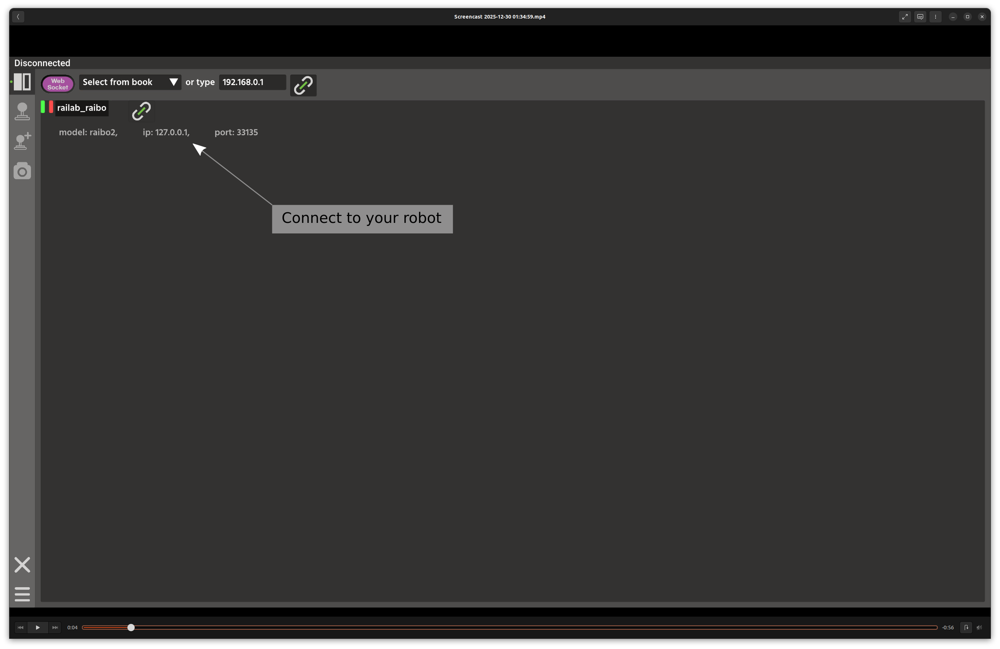
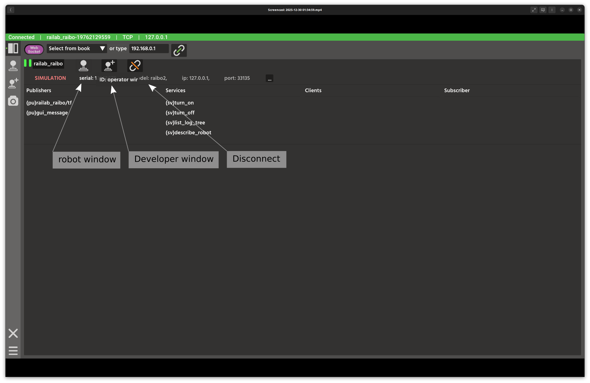
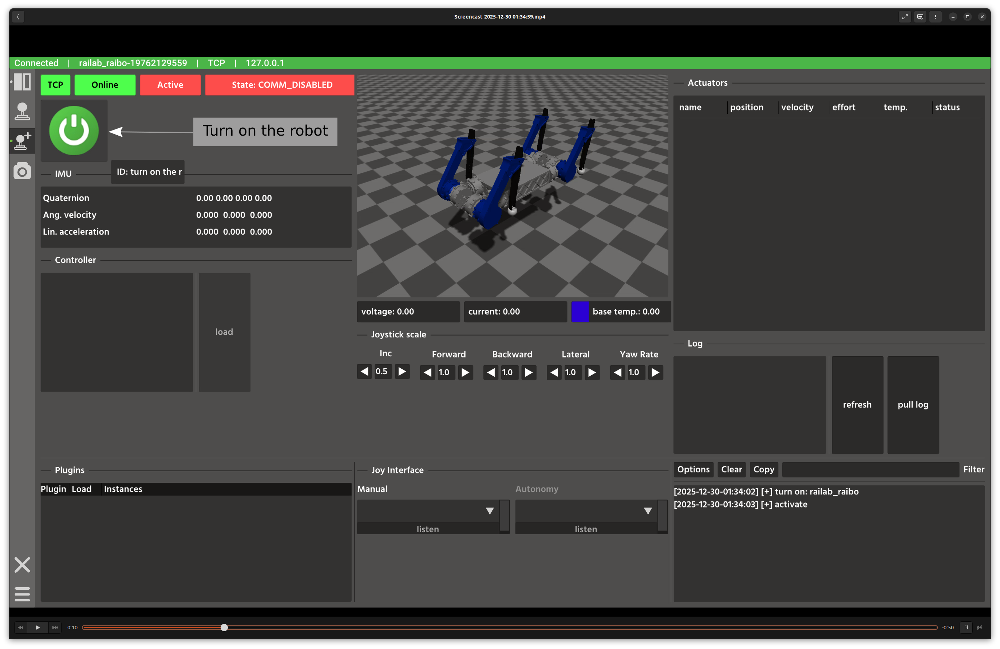
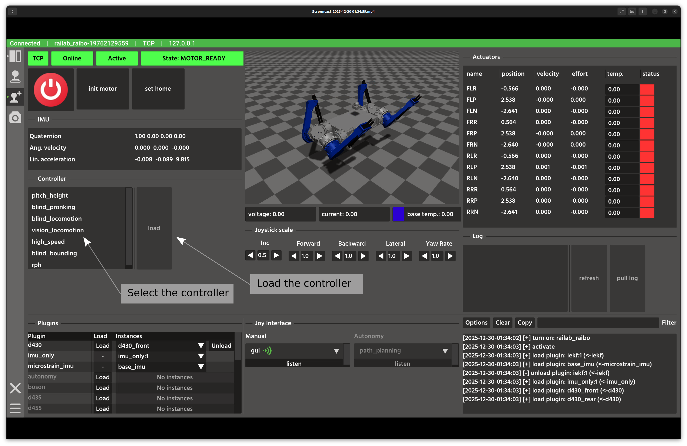
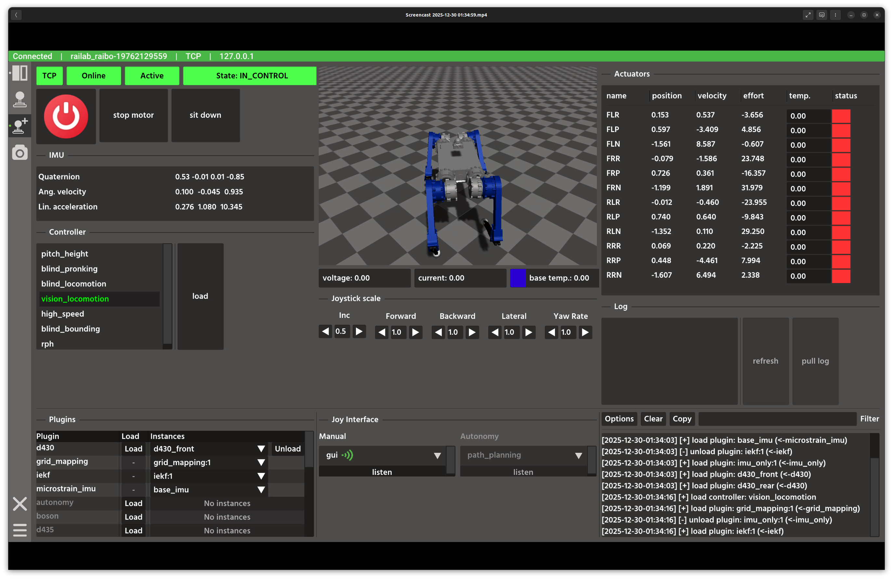
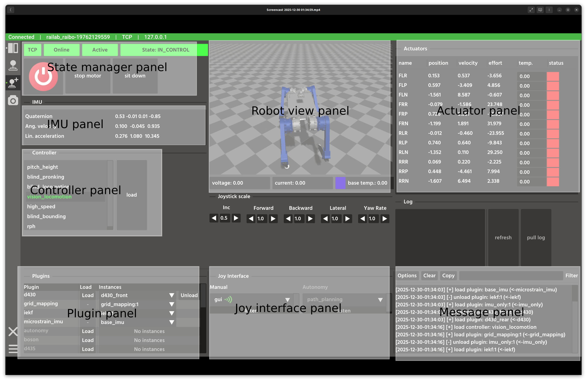

Quick Start
Prerequisites
Ubuntu 22.04 or later
Intel i7 or higher CPU; NVIDIA 5060 or higher GPU (for camera simulation)
Raisim activation key (provided by Raion Robotics)
Raisin GitHub token (provided by Raion Robotics)
Raisim Unreal binary for visualization (Raisim releases); the mobile version is recommended
A valid graphics driver for your GPU
Gamepad for robot control (Logitech F710 recommended; any Linux-supported joystick works)
Raisim Setup
Raisim requires an activation key file named .raisim in your home
directory. Save the provided key to $HOME/.raisim.
Example:
cp /path/to/activation.key $HOME/.raisim
Raisim reads this key at runtime, regardless of where you launch the executables.
Raisin Master Setup
Raisin Master is a package manager and middleware for robotics software. See Raisin Master documentation for details.
Clone it into your workspace:
git clone git@github.com:raionrobotics/raisin_master.git
Create the configuration file:
cd raisin_master
cp configuration_setting_example.yaml configuration_setting.yaml
Open configuration_setting.yaml and replace ghp_mytoken_code with your
Raion Robotics GitHub token. You can also change user_type. The devel
type grants access to pre-release packages (newer features, less testing).
Install Python dependencies and the Raisin script:
pip install -r requirements.txt
./raisin --install
The steps below assume the script is installed.
Simulation and GUI Package Setup
This guide assumes you are installing the Raibo2 simulation. From the Raisin
Master repository directory (for example, raisin_master), run:
raisin install raisin_raibo2 raisin_gui
These packages require your Raion Robotics GitHub token.
After installation, verify the packages in the release directory.
Set up the environment:
raisin setup
This copies the installed packages to the install directory. It also sets
up the install dependency chain.
Install system dependencies:
bash install_dependencies.sh
Administrative privileges are required to download system packages.
How to Run the Simulation
Executables are located in install/bin after you set up the environment.
Binaries with the debug_build suffix are for debugging only.
Start the simulation node:
install/bin/raisin_raibo2
Start the GUI in another terminal:
install/bin/raisin_gui
After the GUI starts, you will see the robot selection window:

If you launch multiple Raibo2 nodes, they appear in this list along with any robots discovered on your local network. Select the robot you want to control.
{kind=link}
Click the Connect button.
{kind=link}
Once connected, three additional buttons appear. For this tutorial, open the Developer Window.
{kind=link}
The robot node is currently off. The robot server is on and manages the node. Turn on the robot node.
{kind=link}
When the robot is on, it publishes multiple topics that appear in the Developer Window. For a quick start, choose the vision controller and press Load. This calls the load controller service in the background.
{kind=link}
You can now control the robot with your gamepad. Button mappings vary by controller, so test yours first. The image below highlights key areas of the Developer Window.
{kind=link}
Once the simulation is running, launch raisimUnreal.sh from the Raisim
Unreal folder you downloaded.
{kind=link}
The Raisin node exposes two ports. It connects to port 8080 by default. Port 8080 renders the World Hub, which contains the estimated and perceived world state.
To view the simulation world, clear AutoConnect, enter port 7000, and click
Connect again.
{kind=link}
Port 7000 renders the simulation world with the exact simulation state.
To learn more about Raisim and Raisim Unreal, see Raisim documentation.